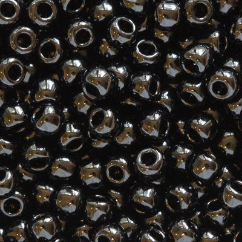
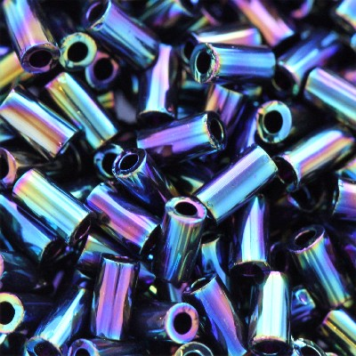
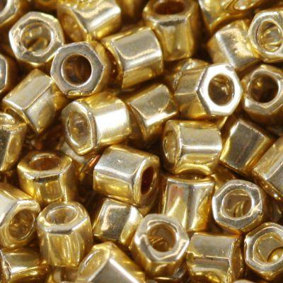

Zobacz najpopularniejsze rodzaje TOHO!

Koraliki TOHO okrągłe
Wybierz wśród wielkości 11/0, 15/0, 8/0, 6/0, 3/0

Koraliki TOHO Bugle
Piękne rurki długości 3mm i 9mm

Nić nylonowa One-G
Nici Toho deydkowane dla koralików

Koraliki TOHO Hex
Koraliki hex o heksagonalnym kształcie